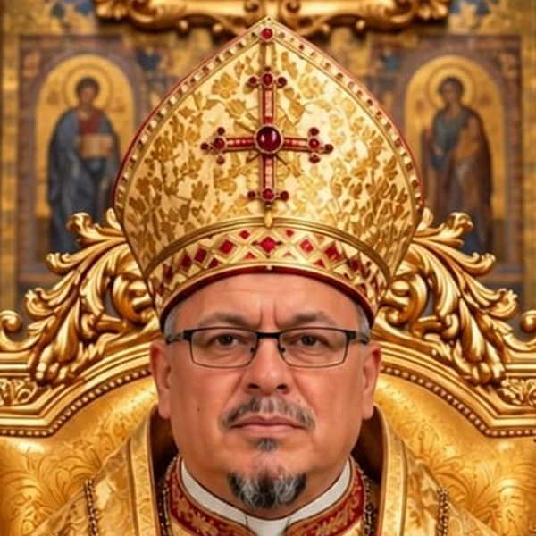

Nosotros
Identidad, historia, fe y gobierno de la Iglesia Católica Apostólica Ortodoxa del Perú.
¿Quiénes somos?
Nuestra identidad
La Iglesia Católica Apostólica Ortodoxa del Perú (ICAOP) es una jurisdicción eclesiástica autónoma —sui iuris, de derecho propio—, establecida en el Perú, que se rige por sus estatutos, cánones y normativas internas. Nuestra tradición se enraíza en la fe de los primeros siglos de la Iglesia, antes de las divisiones del año 1054, custodiando la doctrina de los Santos Padres y los siete primeros Concilios Ecuménicos.
Profesamos una sola fe, una sola Iglesia, la que recibieron los Apóstoles: santa, católica, apostólica y ortodoxa. Celebramos los siete Santos Misterios y vivimos la enseñanza de los Apóstoles, recogida en el documento más antiguo después de las Sagradas Escrituras, el Didajé.
Nuestra tradición litúrgica
Celebramos la fe según el Rito Ortodoxo Occidental, preservando la herencia litúrgica, espiritual y apostólica del cristianismo de Occidente en su forma ortodoxa. En nuestras celebraciones utilizamos el idioma del pueblo que nos acoge, junto con el griego, el latín y el arameo, según la tradición de cada celebración.
Nuestra sucesión y herencia apostólica
Custodiamos y honramos tres grandes raíces apostólicas, que convergen en un solo Cristo:
- Línea de San Andrés, el Primer Llamado: la línea principal de nuestra consagración episcopal, recibida a través de la Iglesia Ortodoxa Bielorrusa Eslava en el Extranjero.
- Herencia de Santo Tomás, el Apóstol de las Indias: inspiración y modelo de nuestra vocación misionera hacia todos los pueblos.
- Línea Petrina: recibida y compartida con nosotros a través de la comunión con el Internationales Bischofs Conclave (IBC) y la línea veterocatólica de la Old Catholic Church of BC / Christ-Katholische Kirche.
«Tres raíces, un solo árbol. Tres caminos, una sola fe. Todos convergen en Jesucristo, el único fundamento de la Iglesia.»
Nuestra autoridad y gobierno
Nuestra Iglesia es guiada por el Santo Sínodo de Obispos Mundial, cuerpo colegiado supremo de nuestra jerarquía, presidido por:
Bajo su paternal solicitud y con la colaboración del Colegio Episcopal Peruano Latinoamericano (CEPLA), trabajamos en unidad espiritual y jurídica al servicio del pueblo de Dios.
Nuestra misión
Nuestra misión es la misma que recibió la Iglesia en Pentecostés: anunciar el Evangelio a toda criatura, celebrar los Santos Misterios y servir con misericordia a quien más lo necesita. Comenzamos nuestra labor misionera en el Perú en 1996, con el nacimiento de la Fraternidad Misionera de la Divina Providencia, y desde entonces hemos extendido nuestra presencia como Iglesia en camino, llevando la luz de Cristo a donde se nos invite.
Promovemos la Comunión de Jurisdicciones Ortodoxas de Rito Occidental, convocando a las Iglesias y comunidades hermanas a caminar juntas en la fe, la caridad y la unidad visible.
Visión
Ser una Iglesia viva y cercana que refleja el rostro misericordioso de Cristo; una familia de creyentes unida en la fe, que transforma sociedades desde el amor, la verdad y el servicio. No somos una Iglesia nueva: caminamos desde el Perú hasta los confines de la tierra.
Nuestras obras
Nuestra fe se hace servicio a través de obras como:
- Casa de Paz Perú — atención integral a familias vulnerables.
- Programa de Educación Católica Ortodoxa (PECO).
- Seminario Internacional Santo Tomás Apóstol — formación de clérigos.
- Asociación Internacional Heraldo del Amor por la Paz.
- Federación Internacional de Abogados Ortodoxos.
- PRODEINJUTE — desarrollo integral de la niñez y juventud.
Conoce más en Obra Pastoral.
«No somos una Iglesia nueva. Somos la Iglesia que nació en Pentecostés, caminando desde el Perú hasta los confines de la tierra.»
Nuestra Patrona y Protectora
Nuestra Señora, la Madre de la Divina Providencia
Por el nacimiento de nuestra labor misionera en la Fraternidad Misionera de la Divina Providencia, reconocemos y honramos a la Santísima Virgen María, bajo el título de la Madre de la Divina Providencia, como nuestra Patrona, Madre y Protectora celestial.
Bajo su amparo comenzó nuestra obra en 1996, y bajo su cuidado maternal continuamos caminando, confiando siempre en que Dios provee con ternura a sus hijos. Que ella interceda por nuestra Iglesia, por nuestras comunidades y por cada uno de los que el Señor nos ha confiado.
«En tus manos, Madre de la Divina Providencia, ponemos nuestra vida, nuestra misión y todo el porvenir de nuestra Iglesia. Que como tú dijiste: “Hágase en mí según tu palabra”, así también nosotros digamos cada día: “Señor, confiamos en tu Providencia”.»
Nuestros patronos
"Cristo es nuestro pan de vida"
"Un verdadero israelita en quien no hay doblez"
Nuestro logo
Nuestro logo reúne en una sola imagen la fe, la historia y la misión de la ICAOP. Cada uno de sus elementos tiene un significado.

-
1
El templo
Al centro, una catedral que une las cúpulas de la tradición oriental con las torres y los arcos góticos de Occidente: es la Iglesia, una sola casa de Dios donde se encuentran la fe ortodoxa y el rito occidental.
-
2
Las llaves cruzadas
Signo de la Sucesión Petrina y de la autoridad que Cristo confió a San Pedro: «Te daré las llaves del Reino de los Cielos» (Mateo 16,19).
-
3
Las flores de lis
Símbolo de pureza y de la Santísima Virgen María, y emblema tradicional del Occidente cristiano.
-
4
La cruz trebolada
A la izquierda, la cruz de Cristo con los extremos en forma de trébol, signo de la Santísima Trinidad.
-
5
La cruz de San Andrés con el Alfa y la Omega
A la derecha, la cruz en aspa del Apóstol San Andrés, de quien proviene nuestra línea principal de sucesión, junto a las letras Α y Ω: Cristo, principio y fin de todo (Apocalipsis 22,13).
-
6
El monograma mariano
En la base, las letras A y M entrelazadas (Ave María), que ponen a nuestra Iglesia bajo el amparo de la Madre de la Divina Providencia, nuestra Patrona.
«Oriente y Occidente, Pedro y Andrés, la Cruz y la Madre: todo en nuestro logo conduce a Cristo, principio y fin.»
Nuestra historia
Consideramos a la Iglesia de Jerusalén como la madre de todas las Iglesias cristianas: fue allí donde se organizó el primer sistema litúrgico, y fue en Antioquía donde, según Hechos 11:26, los discípulos recibieron por primera vez el nombre de "cristianos". La ICAOP se reconoce heredera de esa tradición apostólica ininterrumpida.
1996 — Nacimiento
Nace la Fraternidad Misionera de la Divina Providencia en el Perú, como semilla y comienzo de nuestra labor evangelizadora. Bajo el amparo de la Madre de la Divina Providencia, comienza la misión con sencillez y fe.
1998 — Reconocimiento legal y eclesial
La Fraternidad Misionera de la Divina Providencia obtiene su personería jurídica, formalizando su presencia civil. Recibe también su reconocimiento eclesiástico al integrarse a una extensión de la tradición ortodoxa, dando inicio a nuestra vida canónica.
2013 — Erección de la Eparquía
Se erige canónicamente la Eparquía Ortodoxa de Lima, marcando el crecimiento de la comunidad y su organización diocesana.
2015 — Consagración episcopal y constitución de la ICAOP
- Enero de 2015: recibe la consagración episcopal el que sería su Primado, Monseñor Francisco Ángel Ernesto Morán Vidal, en Belo Horizonte, Brasil, por jerarcas de la Iglesia Ortodoxa Bielorrusa Eslava en el Extranjero.
- 17 de agosto de 2015: mediante escritura pública, se constituye formalmente la Iglesia Católica Apostólica Ortodoxa del Perú (ICAOP), con su propia personería jurídica como entidad civil y religiosa.
- Se crea el Colegio Episcopal Peruano Latinoamericano (CEPLA), con personería jurídica propia, como instancia de coordinación y apoyo institucional.
2017 — Continuidad como jurisdicción independiente
La ICAOP continúa su camino como jurisdicción autónoma sui iuris —de derecho propio—, fiel a su misión y a sus estatutos.
2022 — Inscripción oficial en el Registro de Entidades Religiosas
El 12 de setiembre de 2022, mediante Resolución Directoral N.º 0121-2022-JUS/DGJLR, el Ministerio de Justicia y Derechos Humanos del Perú inscribe oficialmente a la ICAOP en el Registro de Entidades Religiosas, con el Registro N.º 158-2022-JUS/RER.
2025 — Renovación institucional y transmisión de sucesión
- 16 de octubre de 2025: se renueva ante el Ministerio de Justicia y Derechos Humanos la inscripción de la ICAOP en el Registro de Entidades Religiosas, mediante Resolución Directoral N.º 19-2025-JUS/DGJLR.
- 10 de diciembre de 2025: se celebra un acto episcopal mediante el cual el Internationales Bischofs Conclave (IBC) comparte la plenitud de la sucesión apostólica de la línea veterocatólica con el Primado de la ICAOP.
Presente — 2026
Treinta años de presencia misionera. Desde aquel pequeño comienzo en 1996 hasta hoy, la ICAOP continúa caminando: celebrando los Santos Misterios, formando clérigos y fieles, sirviendo a los más necesitados a través de sus obras sociales, y promoviendo la Comunión de Jurisdicciones Ortodoxas de Rito Occidental.
«No empezamos con grandes obras, sino con una gran fe. Y el Señor ha hecho el resto, paso a paso, año tras año, bajo el amparo de la Madre de la Divina Providencia.»
Fe y liturgia
La Iglesia Católica Apostólica Ortodoxa del Perú profesa una sola fe, la que fue entregada a los Apóstoles y conservada por la Iglesia desde los tiempos apostólicos. En ella celebramos los siete Santos Misterios y vivimos la enseñanza de los primeros concilios ecuménicos y los Santos Padres.
Nuestra celebración litúrgica propia y oficial es el Rito Ortodoxo Occidental, en el cual expresamos nuestra alabanza y nuestra vida sacramental. Sin embargo, en la riqueza de la única fe, el Santo Sínodo de Obispos Mundial puede, mediante decreto expreso, erigir o autorizar vicariatos, misiones o comunidades que celebren según el Rito Bizantino o el Rito Siríaco, siempre en plena comunión con la Iglesia y bajo la guía de sus autoridades.
«Una sola fe, un solo Señor, pero alabado con diversos ritos que todos brotan de la misma fuente apostólica.»
El Didajé — la enseñanza de los Apóstoles
El Didajé («Enseñanza», en griego) es el documento más antiguo de la Iglesia después de las Sagradas Escrituras, escrito en el siglo I. Recoge lo que Cristo enseñó y los Apóstoles transmitieron a las primeras comunidades: los dos caminos (vida y muerte), el Bautismo, la Eucaristía, la oración y el ayuno, el amor fraterno y la disciplina vivida con humildad. La ICAOP lo custodia no por ser antiguo, sino por ser fiel a Cristo.
Nuestra creencia
Glorificamos por igual al Padre, al Hijo y al Espíritu Santo. Creemos que Jesucristo es el Hijo de Dios, verdaderamente Dios y Salvador, una sola esencia con el Padre, y verdaderamente hombre en todo menos en el pecado. Creemos en el Espíritu Santo como Señor y fuente de vida. Honramos y veneramos a los Santos, y de manera especial a la Siempre Virgen María, Madre de Dios.
El Credo Niceno-Constantinopolitano
Es el único dogma de la Iglesia Católica Apostólica: la profesión de fe definida en el Primer Concilio Ecuménico de Nicea (325) y completada en el de Constantinopla (381). La ICAOP lo profesa en su forma original.
Creo en un solo Dios, Padre Todopoderoso, Creador del cielo y de la tierra, de todo lo visible y lo invisible.
Y en un solo Señor Jesucristo, Hijo único de Dios, nacido del Padre antes de todos los siglos: Luz de Luz, Dios verdadero de Dios verdadero, engendrado, no creado, de la misma esencia del Padre, por quien todo fue hecho; que por nosotros los hombres y por nuestra salvación bajó de los cielos, y por obra del Espíritu Santo se encarnó de María Virgen y se hizo hombre; y fue crucificado por nosotros en tiempos de Poncio Pilato, padeció y fue sepultado, y resucitó al tercer día según las Escrituras; subió a los cielos y está sentado a la diestra del Padre; y de nuevo vendrá con gloria para juzgar a los vivos y a los muertos, y su Reino no tendrá fin.
Creo en el Espíritu Santo, Señor y dador de vida, que procede del Padre, que con el Padre y el Hijo es adorado y glorificado, y que habló por los profetas.
Creo en la Iglesia, Una, Santa, Católica y Apostólica. Reconozco un solo Bautismo para el perdón de los pecados. Espero la resurrección de los muertos y la vida del mundo venidero. Amén.
La vida sacramental en la ICAOP, de 1996 a la fecha
Los comienzos: 1996–2005
Con el nacimiento de la Fraternidad Misionera de la Divina Providencia en 1996, la vida sacramental comenzó de forma sencilla pero ferviente:
- La Santa Eucaristía: celebrada en capillas domésticas, hogares humildes y espacios cedidos por comunidades, siempre con el corazón dispuesto.
- Bautismos y Catequesis: familias que empezaron a acercarse, niños y adultos que encontraron en la fe un camino de esperanza.
- Reconciliación y Unción de los Enfermos: visitas pastorales, acompañamiento en las casas, en los hospitales, en los momentos de mayor necesidad.
- El Didajé: desde el principio, la enseñanza de los Apóstoles guió la preparación de los fieles para recibir cada Sacramento con fe viva.
«No empezamos con grandes templos, sino con el pan bendecido en una mesa humilde. Y ahí el Señor estuvo presente.»
Consolidación y crecimiento: 2006–2015
Con el paso de los años, el Señor multiplicó su bendición:
- Nuevos presbíteros y diáconos fueron ordenados para el servicio del pueblo de Dios.
- Se abrieron las primeras capillas y centros de misión en distintos barrios de Lima y luego en provincias.
- Los siete Sacramentos se celebraron con creciente solemnidad: se formó a los fieles para que comprendieran y vivieran cada don de gracia.
- En enero de 2015, con la consagración episcopal de nuestro Primado, se fortaleció la vida sacramental y pastoral, asegurando la transmisión de la gracia a través de la imposición de manos.
Expansión y fidelidad: de 2016 hasta hoy
- Las celebraciones litúrgicas se han extendido a las comunidades misioneras dentro y fuera del Perú, manteniendo el mismo espíritu: sencillez, respeto y fe profunda.
- Miles de fieles han recibido los Santos Misterios: bautismos, crismaciones, primeras comuniones, matrimonios, reconciliaciones y la santa unción de los enfermos.
- Se ha cuidado con especial esmero la formación de los clérigos y del pueblo de Dios, para que nadie reciba los Sacramentos sin la debida preparación.
- En todo este camino, la Madre de la Divina Providencia ha acompañado cada celebración, cada familia y cada servidor del Evangelio. Bajo su amparo, la gracia de Dios ha crecido silenciosa y abundantemente.
Lo que permanece
«En el principio, en el camino y hasta hoy, lo que sostiene nuestra Iglesia no son las obras nuestras, sino la gracia de Cristo presente en sus Santos Misterios. Treinta años después, seguimos haciendo lo mismo que hicieron los Apóstoles: celebrar la Cena del Señor, orar por el pueblo, perdonar los pecados y anunciar el Evangelio. Eso es lo que no ha cambiado, y eso es lo que nunca cambiará.»
Ornamentos y vestiduras litúrgicas
La ICAOP, como jurisdicción sui iuris de Rito Ortodoxo Occidental, conserva y utiliza las vestiduras litúrgicas propias de la tradición occidental ortodoxa, aprobadas por el Santo Sínodo de Obispos Mundial. Cada vestidura no es solo adorno, sino signo visible de la gracia y del ministerio de Cristo en su sacerdocio sagrado.
I. Vestiduras comunes a todos los ministros
El Esticario (Sticharion)
Qué es: túnica larga, generalmente de color blanco o del color del tiempo litúrgico, con mangas anchas. Es la primera vestidura que se impone al entrar al altar.
Significado: representa la vestidura de la salvación, la gracia recibida en el Bautismo y la vida santa a la que todo cristiano está llamado. Nos recuerda que todos somos llamados a ser "reino de sacerdotes".
«Alégrate, alma mía, porque el Señor te revistió con vestidura de luz.»
El Cinturón (Zone)
Qué es: cinturón que ciñe el esticario alrededor de la cintura.
Significado: representa la fortaleza y la templanza. Recuerda que debemos tener los lomos ceñidos y la lámpara encendida, listos para el servicio del Señor. Simboliza también el dominio sobre las pasiones y la vigilancia espiritual.
II. Vestiduras del presbítero y del obispo
El Epitraquelio (Estola)
Qué es: banda de tela que se coloca alrededor del cuello y cae sobre el pecho, unida por delante. Es la insignia principal del ministerio sacerdotal; sin ella, no se celebra ningún Sacramento.
Significado: representa la gracia especial del sacerdocio que Cristo comunicó a sus Apóstoles. Es el yugo suave de Cristo sobre el ministro. Significa también que el ministro lleva al pueblo de Dios sobre su corazón, como llevaba el Buen Pastor la oveja perdida.
«Pon sobre ti el yugo del Señor, y tu alma hallará descanso.»
La Casulla Gótica
Qué es: la vestidura exterior principal de quien preside la Divina Liturgia. De corte amplio, abierta a los lados, confeccionada según la forma tradicional de la Edad Media cristiana. Es el ornamento propio de quien ofrece el sacrificio de alabanza.
Significado:
- Representa la caridad que cubre todo —como dice el Apóstol, "la caridad cubre multitud de pecados"—.
- Cubre todo el cuerpo del ministro, recordando que Cristo es quien actúa en su ministro: ya no vive él, sino Cristo en él.
- Su forma antigua nos remite a la tradición de los primeros siglos y al respeto sagrado debido a la oración eucarística.
- No es un vestido de moda, sino el hábito del sacrificio: el ministro se reviste para desaparecer y dejar que Cristo sea visible.
«Revístete, Señor, de luz, como de vestidura, que brille tu luz sobre todo lo que está bajo el cielo.»
La Capa Gótica (Capa Pluvial)
Qué es: manto amplio y majestuoso que se lleva sobre los hombros, abierto por delante, sujeto al cuello. Se utiliza en procesiones, bendiciones, oficios fuera de la Misa, solemnidades y actos pontificales. No sustituye a la casulla en la celebración de la Divina Liturgia.
Significado:
- Representa el manto de la gloria de Cristo y su realeza eterna.
- Al envolver al ministro desde los hombros, recuerda que Dios cubre y protege a su Iglesia con su sombra protectora.
- Su belleza y dignidad expresan la alegría de la fiesta y la majestad de la presencia de Dios en su pueblo.
- Es también símbolo de la caridad universal: amplia, acogedora, que abraza a todos los hijos de Dios.
«Cúbranos, Señor, con el manto de tu bondad, y extienda sobre nosotros tu mano poderosa.»
III. Vestiduras propias del obispo
Además de las anteriores, el obispo viste:
El Omoforio
Qué es: banda ancha que rodea el cuello, cruza el pecho y desciende por delante y por detrás. Es la insignia más característica del obispo.
Significado: representa a Cristo el Buen Pastor, que lleva la oveja perdida sobre sus hombros hasta devolverla al redil. El obispo lleva a su pueblo sobre su corazón y sus hombros, recordando que su ministerio es ante todo servicio y solicitud pastoral.
El Sakkos y otras insignias
En ocasiones solemnes, el obispo puede usar también el Sakkos (túnica de corte más ajustado) como signo de dignidad apostólica, junto con la Panagia (el icono de la Madre de Dios sobre el pecho), que recuerda que la Virgen está siempre presente en la presidencia de la asamblea sagrada.
Resumen de nuestra norma
- La Casulla Gótica es la vestidura propia para celebrar la Divina Liturgia.
- La Capa Gótica se utiliza para procesiones, bendiciones, solemnidades y oficios fuera de la Misa.
- Ambas expresan nuestra identidad de Rito Ortodoxo Occidental: antigua, digna, sencilla y reverente.
- No son solo formas externas: cada vestidura nos recuerda que quien celebra es Cristo, y que el ministro no es más que su servidor, revestido de su gracia.
«No nos atrevemos a acercarnos a tu altar por nuestros méritos, sino por tus misericordias.» Oración al entrar al santuario
Nuestros templos y celebración litúrgica
Disposición del santuario
Sin iconostasio. A diferencia de los templos de rito bizantino, nuestros templos no tienen una gran pared de iconos que separe el altar del pueblo. El Altar Mayor permanece visible, a la vista de todos los fieles, signo de que en la asamblea cristiana todos participan del mismo misterio y todos son invitados a la mesa del Señor. El altar puede estar delimitado por una barandilla baja o comulgatorio, que marca el espacio sagrado sin crear separación.
Orientación de la celebración
Hacia el este (ad orientem). Como regla general, la Divina Liturgia se celebra mirando hacia el oriente, hacia la salida del sol, símbolo de Cristo, "Sol de Justicia", que viene de lo alto y es la luz del mundo. Presidir la asamblea mirando hacia el oriente significa que todos —clero y fieles— miramos juntos al Señor que viene.
Hacia el pueblo (versus populum). Siendo la ICAOP una jurisdicción sui iuris de derecho propio, el Ordinario del lugar puede autorizar, por razones pastorales, que en determinadas celebraciones el celebrante se coloque mirando al pueblo. Esta facultad se ejerce con prudencia y siempre respetuosa del sentido de la oración litúrgica, para que la atención no se desvíe del Misterio que se celebra.
«Miramos todos al mismo Señor, ya sea juntos hacia el oriente o el celebrante de cara al pueblo, porque en toda celebración es Cristo quien preside, presente en medio de su asamblea.»
El espacio de los fieles
Bancos para la asamblea. A diferencia de la costumbre en muchos templos de rito bizantino, donde los fieles permanecen de pie, en nuestras iglesias existen bancos o asientos para los fieles. Permiten al pueblo de Dios seguir con atención, reposo y recogimiento las sagradas celebraciones, manteniendo siempre una actitud de oración y reverencia durante los momentos más sagrados.
Imágenes e iconografía
Primacía del icono. La imagen sagrada ocupa un lugar central en nuestros templos, conforme a la veneración que la Iglesia ha dado siempre a las imágenes de Cristo, de la Madre de Dios y de los santos. El icono, pintado según la tradición sagrada, es nuestra forma principal de representación sagrada.
Uso excepcional de estatuas tridimensionales. En fidelidad a nuestra tradición de Rito Occidental, se permite también el uso devocional de imágenes y estatuas tridimensionales, siempre con moderación y respeto. Estas no sustituyen al icono sagrado, sino que conviven con él como expresión legítima de la piedad de los fieles en Occidente, recordándonos que la Palabra se hizo carne y habitó entre nosotros. Su uso queda siempre bajo la vigilancia y autoridad del Ordinario, para asegurar que todo conduzca a la reverencia y a la verdad del misterio que representan.
En síntesis
Nuestros templos son sencillos y dignos: el altar visible, la oración orientada hacia el Señor con libertad pastoral cuando lo aconseje el bien de los fieles, espacios que acogen al pueblo en oración, e imágenes sagradas —principalmente iconos, con uso moderado de estatuas— que nos recuerdan que estamos en la presencia de Dios y de sus santos.
Sucesión apostólica y cánones
Sucesión apostólica: tres líneas, un solo Cristo
Línea de San Andrés, el Primer Llamado
La consagración episcopal de Su Beatitud, el Arzobispo Metropolitano Primado Francisco Ángel Ernesto Morán Vidal, fue recibida a través de la Iglesia Ortodoxa Bielorrusa Eslava en el Extranjero. Por esta vía, nuestra Iglesia se enraíza en la línea apostólica de San Andrés, el primero en ser llamado por Cristo, quien llevó a su hermano Simón ante el Señor. Su sucesión misionera nos recuerda que toda Iglesia es puente de unidad entre Oriente y Occidente.
Línea de San Pedro: Sucesión Petrina
Además de la línea de San Andrés, la ICAOP conserva y honra la Sucesión Petrina, recibida y compartida con nuestra Iglesia a través de la comunión con el Internationales Bischofs Conclave (IBC) y la tradición veterocatólica. Esta línea nos remonta a las palabras del Señor: "Tú eres Pedro, y sobre esta roca edificaré mi Iglesia" (Mateo 16,18). Es el vínculo de comunión visible y de ordenación que hemos recibido como don de Dios, para custodiar la unidad y la fidelidad de la fe.
Línea de Santo Tomás, el Apóstol de las Indias
Inspirados también en el testimonio de Santo Tomás, quien llevó el Evangelio hasta los confines de Oriente, nuestra Iglesia recibe su herencia misionera. Su fe valiente —"Señor mío y Dios mío"— es el modelo de nuestra labor evangelizadora, especialmente entre los pueblos de América Latina y allende los mares.
«Tres raíces, un solo árbol. Tres caminos, una sola fe.»
Ninguna línea se antepone a la otra; todas convergen en Jesucristo, el único fundamento de la Iglesia. No elegimos entre los Apóstoles: los abrazamos a todos, porque todos son servidores del único Señor.
Nuestros cánones: principios de vida eclesial
«No somos sin ley, porque estamos bajo la ley de Cristo.» 1 Corintios 9,21
Canon I — De nuestra fe
Creemos en un solo Dios, Padre, Hijo y Espíritu Santo. Mantenemos íntegro el depósito de fe recibido de los Apóstoles. Profesamos la fe niceno-constantinopolitana, sin alteración alguna. Vivimos según la enseñanza de los Apóstoles recogida en el Didajé.
Canon II — De nuestra sucesión y gobierno
Nuestra sucesión apostólica proviene de Jesucristo mismo, quien la entregó a sus Apóstoles. La gracia del ministerio episcopal fue recibida primeramente a través de la Iglesia Ortodoxa Bielorrusa Eslava en el Extranjero —línea de San Andrés—, y se ha enriquecido con la transmisión de la Sucesión Petrina compartida por los obispos del Internationales Bischofs Conclave (IBC). La ICAOP se rige por el Santo Sínodo de Obispos Mundial, presidido por Su Beatitud el Primado, bajo cuya guía se mantiene la unidad de la fe y de la comunión sacramental.
Canon III — De nuestra autonomía y comunión
Somos una jurisdicción sui iuris —de derecho propio—, gobernada conforme a nuestros estatutos y cánones. Promovemos la Comunión de Jurisdicciones Ortodoxas de Rito Occidental, convocando a las Iglesias hermanas a caminar juntas en la fe, en los Sacramentos y en la caridad. Somos autónomos en nuestro gobierno, pero nunca aislados en nuestra caridad.
Canon IV — De los sacramentos
Celebramos fielmente los siete Santos Misterios según la tradición apostólica. Ningún sacramento se niega sin causa justa. Todos los fieles tienen derecho a la gracia de Dios. La Eucaristía es el centro y la cumbre de toda nuestra vida eclesial.
Canon V — Del ministerio
El sacerdocio es servicio, no poder. El clero se rige por normas de vida, oración y fidelidad, siguiendo el ejemplo de los Apóstoles enseñado en el Didajé. Nadie se gloria en su ministerio, sino en Aquel que lo llamó.
Canon VI — De la misión
La Iglesia existe para evangelizar. Esta misión comenzó en el día de Pentecostés y continúa hoy, bajo la guía del Santo Sínodo. Nadie está excluido del amor de Dios. Llevamos a Cristo a todos los pueblos, sin distinción.
Canon VII — De la caridad
"La fe sin obras está muerta." Compartimos nuestros bienes con los necesitados. Acogemos al extranjero, al pobre, al enfermo y al pequeño. Seamos hospitalarios, porque muchos han hospedado ángeles sin saberlo.
Canon VIII — De la unidad
Somos un solo cuerpo. Si uno sufre, todos sufren. Promovemos la unidad visible de los cristianos, comenzando por mantenernos nosotros mismos unidos en la fe, en la oración y en la comunión de los Santos Misterios.
«Tres líneas apostólicas, una sola fe. Tres raíces, un solo árbol. Todo viene de Cristo, todo conduce a Cristo, porque Él es el principio y el fin de toda sucesión, de toda gracia y de toda vida.»
Gobierno y organización de la ICAOP
Nuestro principio fundamental
«No somos gobernados por personas, sino por Cristo, que es el único Pastor y Cabeza de la Iglesia. El Santo Sínodo no se pone por encima de la fe, sino que sirve a la fe que una vez fue entregada a los santos.»
El Santo Sínodo de Obispos Mundial, autoridad suprema
El Santo Sínodo de Obispos Mundial es el cuerpo colegiado supremo de nuestra Iglesia. Está integrado por los obispos en comunión con la ICAOP, y es presidido por el Catholicós, Arzobispo Metropolitano Primado.
Su naturaleza y misión
- Es la expresión de la colegialidad episcopal: todos los obispos son sucesores de los Apóstoles y comparten una misma autoridad en comunión con el Primado.
- Guarda y defiende la integridad de la fe, la pureza de los Sacramentos y la disciplina canónica.
- Promueve la unidad entre las comunidades, vicarías y jurisdicciones en comunión con la ICAOP.
- Promulga los cánones, normas y directrices generales para la vida de toda la Iglesia.
- Examina, aprueba y acompaña las iniciativas pastorales, misioneras y sociales de las distintas comunidades.
Su funcionamiento
- Se reúne en sesión solemne periódicamente, y de manera extraordinaria cuando las necesidades de la Iglesia lo requieran.
- Las decisiones se toman en espíritu de comunión, oración y consenso, conforme a los cánones y estatutos vigentes.
- El Primado preside, guía y mantiene la unidad, pero no decide separadamente del Sínodo en los asuntos de importancia para toda la Iglesia.
Instancias de colaboración
El Primado, centro de unidad
Su Beatitud Francisco Ángel Ernesto Morán Vidal, Arzobispo Metropolitano Primado y Catholicós, es el principio visible de unidad de la ICAOP. Preside el Santo Sínodo, cuida de la comunión entre todas las comunidades y representa a la Iglesia ante las autoridades civiles y eclesiales. Su ministerio es de pastoreo, guía y servicio paternal, no de dominio.
El Colegio Episcopal Peruano Latinoamericano (CEPLA)
Instancia que reúne a los obispos y colabora en el apoyo jurídico, administrativo y de coordinación institucional. Cuenta con personería jurídica civil propia y trabaja en armonía con el Santo Sínodo: lo espiritual y lo civil, cada cual en su ámbito, al servicio de una misma misión.
Consejos presbiterales y diaconales
En cada comunidad o vicaría, los presbíteros y diáconos colaboran con su obispo en el cuidado del pueblo de Dios, compartiendo las responsabilidades de la vida pastoral según su ministerio.
Los cinco ejes de gobierno y acción eclesial
Eje doctrinal: fidelidad a la Palabra
«Enseñando a observar todo lo que os he mandado.» (Mateo 28,20)
- Custodiar y enseñar la fe íntegra recibida de los Apóstoles.
- Transmitir la Tradición de los Santos Padres y la doctrina de los siete primeros Concilios Ecuménicos.
- Formar al clero y a los fieles en la recta enseñanza de Cristo.
- Preservar puro el depósito de la fe, sin añadir ni quitar nada.
Eje canónico y jurídico: orden y libertad
«Todo debe hacerse con orden.» (1 Corintios 14,40)
- Gobernar conforme a los Cánones, Estatutos y normas internas de la Iglesia.
- Respetar la autonomía de cada vicaría o misión, dentro de la comunión de la Iglesia universal.
- Actuar con transparencia, justicia y respeto a las leyes civiles de cada país donde estamos presentes.
- Asegurar que la disciplina sirva a la caridad, y no al contrario.
Eje litúrgico y sacramental: fuente y cumbre
«Haced esto en memoria de mí.» (Lucas 22,19)
- Celebrar dignamente la Divina Liturgia y los siete Santos Misterios.
- Custodiar el Rito Ortodoxo Occidental y respetar los demás ritos apostólicos autorizados.
- Formar a los fieles para que participen consciente y activamente de los sagrados misterios.
- Velar por la belleza, el decoro y la reverencia en el culto divino.
Eje pastoral y misionero: servicio y evangelización
«Id por todo el mundo y predicad el Evangelio a toda criatura.» (Marcos 16,15)
- Llevar el Evangelio a todos, comenzando por los más cercanos y los más necesitados.
- Cuidar de los enfermos, los ancianos, los niños, las familias y quienes sufren soledad.
- Formar comunidades vivas donde nadie se sienta extranjero ni olvidado.
- Promover las obras sociales, educativas y de caridad como expresión visible de nuestra fe.
Eje de unidad eclesial: comunión fraterna
«Que todos sean uno, para que el mundo crea.» (Juan 17,21)
- Fomentar la comunión entre las distintas comunidades, vicarías y jurisdicciones hermanas.
- Promover la Comunión de Jurisdicciones Ortodoxas de Rito Occidental.
- Buscar siempre la reconciliación y el diálogo, dentro de la Iglesia y con todas las personas de buena voluntad.
- Dar testimonio visible de que Cristo ha venido para reunir a todos los hijos dispersos.
En síntesis
En la ICAOP no gobernamos para mandar, sino para servir. El Santo Sínodo no es un consejo de gobierno humano, sino la asamblea de los sucesores de los Apóstoles, reunidos en el nombre de Cristo, bajo la presidencia de su Primado, para custodiar la fe, celebrar los misterios, servir al pueblo santo de Dios y llevar el Evangelio hasta los confines de la tierra.
«El que quiera ser grande entre vosotros, que sea vuestro servidor.» Jesús
Para conocer a los obispos que integran el gobierno de la Iglesia en el Perú, visita la sección Miembros del Santo Sínodo.
El Catholicós, Arzobispo Metropolitano Primado

Su Beatitud Francisco Ángel Ernesto Morán Vidal
Arzobispo Metropolitano Primado del Perú · Catholicós · Presidente del Santo Sínodo de Obispos Mundial
Ha sido elegido y aprobado por el Santo Sínodo Mundial de nuestra Iglesia para servir como nuestro primer Catholicós, Arzobispo Metropolitano Primado de la Iglesia Católica Apostólica Ortodoxa del Perú.
Tendrá lugar en la Ciudad Protegida por Dios, Lima, Perú. En este acto sagrado, ante el altar del Señor, en presencia de los obispos, del clero y del pueblo fiel de Dios, asumirá públicamente este ministerio de unidad, guía y servicio.
«No se exalta a sí mismo, sino que es exaltado por Aquel que lo llama.»
Significado del título
La palabra «Catholicós» viene del griego y significa «lo que es de todos, lo universal». No es un título de poder, sino de servicio: significa custodiar la fe que se cree en todas partes, siempre, por todos. Junto con él, los títulos de Arzobispo Metropolitano y Primado expresan su ministerio.
Funciones del Catholicós, Arzobispo Metropolitano Primado
Centro de unidad y comunión
Como Primado, es el principio visible de unidad de toda nuestra Iglesia. Preside el Santo Sínodo Mundial, mantiene la comunión entre las vicarías, misiones y comunidades, y promueve la Comunión de Jurisdicciones Ortodoxas de Rito Occidental. Es el vínculo que une, no el que separa.
Pastor y guía de su Iglesia
Como Arzobispo Metropolitano, pastorea con paternal solicitud la Iglesia en su sede primada y acompaña espiritualmente a todas las comunidades en comunión. Confirma en la fe, sostiene al clero y atiende con especial amor a los más necesitados. Es padre, no solo autoridad.
Custodio de la fe apostólica
Vela por la integridad del depósito de fe recibido de los Apóstoles, conforme a los siete primeros Concilios Ecuménicos. Enseña la verdad del Evangelio sin alteración, y defiende la recta celebración de los Santos Misterios.
Símbolo de universalidad misionera
Como Catholicós, recuerda que la Iglesia es para todos los pueblos. Promueve la extensión del Evangelio, inspirado en el testimonio de San Andrés, San Pedro y Santo Tomás. Su ministerio nos recuerda que la salvación se ofrece a toda la creación.
Servicio de concordia y testimonio público
Armoniza la vida de la Iglesia respetando la autonomía de cada jurisdicción. Representa a la ICAOP ante las autoridades civiles y eclesiales con humildad y respeto, dando testimonio de Cristo con palabras y obras.
En síntesis
Cinco funciones, un solo ministerio: servir a Cristo en su Iglesia.
El Catholicós no gobierna para ser servido, sino para servir. Su autoridad viene de Aquel que dijo: «Yo estoy entre vosotros como el que sirve» (Lucas 22,27). Bajo su guía, la ICAOP camina unida, fiel y misionera, hacia el día de su entronización en febrero de 2027, confiando siempre en la gracia de Dios que lo ha llamado.